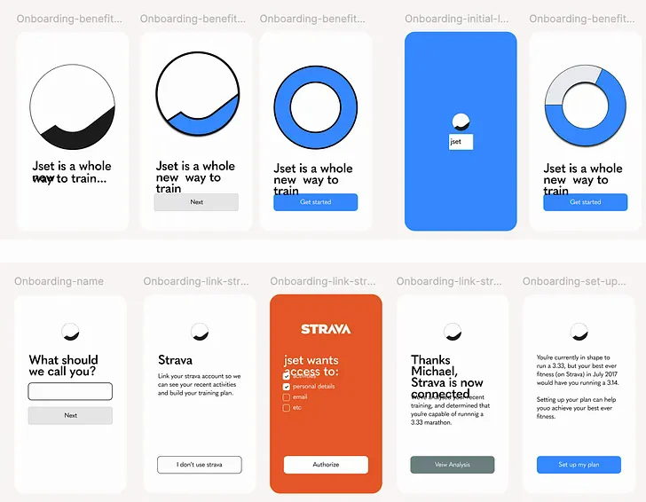
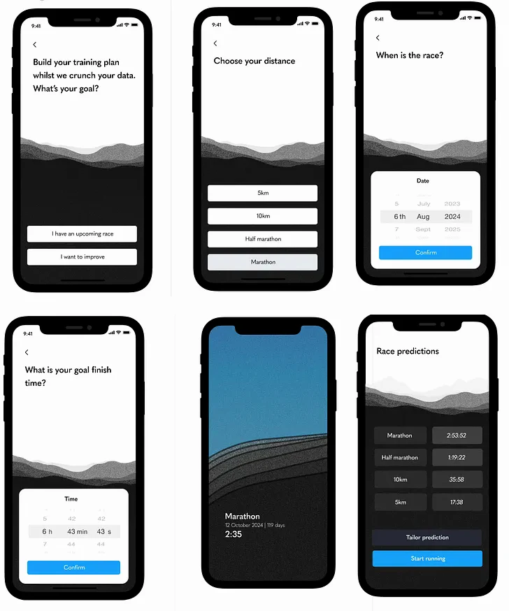
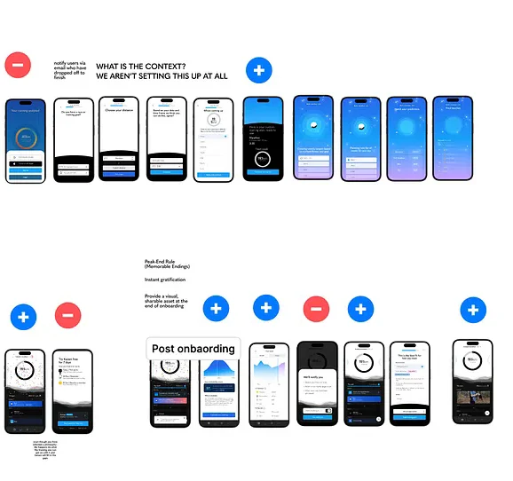
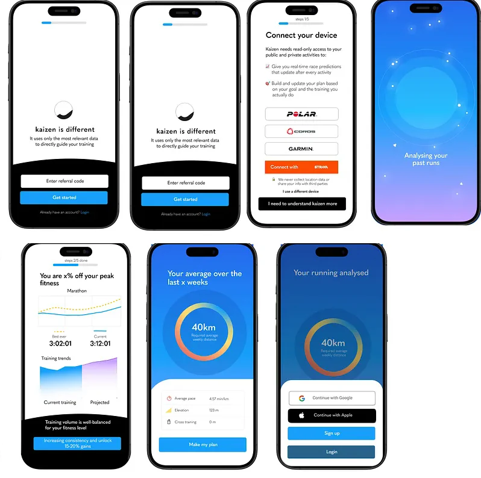
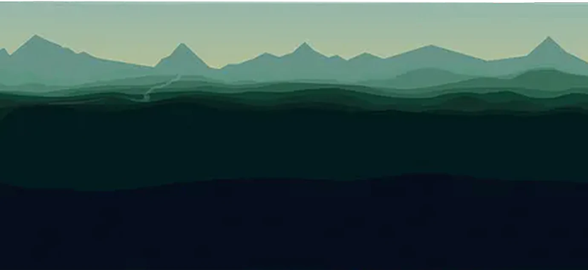

Kaizen — All aboard

A redesign of onboarding that meant committing to something operationally hard.
As a founder I helped build Kaizen from scratch, zero customers, no design, developers learning on the job. Within 6 months we’d hit over 10,000 downloads and nothing spent on marketing.
So the onboarding was, to put it nicely, functional. What mattered most in those first months was that the app actually worked — stable, fast, and reliably got someone from A to B.
But we soon needed to step that up.

Kaizen had a unique approach to training
Kaizen had a unique approach to training, the catch: this didn’t match the mental model most runners have of training. People expect “here’s your plan, follow it.” Kaizen was offering something better, but stranger. Which meant onboarding had to do two things at once:
Precisely communicate the main differentiation on offer, and in doing so give the user an early win that would encourage them to complete onboarding and start the free trial.

What I knew going in
For Kaizen’s first year I did all of the customer support and tracked down and talked to a wider cohort: people who’d onboarded successfully but churned, so by the time we came to redesign onboarding I knew exactly what confused people, what they expected, and what really felt valuable. We realised Kaizen wasn’t for beginners but for ‘the thinking runner’: someone who knew training and was tired of the noise.
All of this gave clear signals about the eureka moment we needed to reach early. People needed to understand the principle at the core of Kaizen and how actionable that was, i.e. a super accurate fitness prediction, and the start of a responsive training schedule.

Building consensus and a mediocre flow as a result
As founders we rarely agreed on what to do next, and onboarding was no exception. One camp: don’t waste anyone’s time, get them through fast, save the high-value moments for the trial. The other: take the time to explain the product properly.
We worked through it the way you’d expect. Low-fidelity iterations, high-performing onboarding from our sector and well outside it, short user interviews, prototypes shared with current and new users.
By the end, one thing was clear to me. We were still proposing something essentially functional. It didn’t connect to the aspiration a person has when they decide to run a race.



One reason we struggled to build something decent
One reason we struggled to build something decent was the competing ideas about what mattered most to prospective customers. As the designer, and the person closest to the customer, I had to do a better job of communicating the thing people really cared about: is this non-intuitive, slightly weird app actually going to get me to the start line of a marathon, ready to race, ready to hit my time?
So why not lean into that doubt? Acknowledge that the user was already on a running journey, and show that it could move forward with Kaizen.
As they progressed use a landscape to change and adapt to different moments: how fit they were, how much they’d need to run each week to stay on track, and have a sense of progress as they moved through the app.


Why this design was worth the work
This was going to be a heavy lift. We could have done something simpler, moved on, and got into the detail of improving trial-to-subscription. But a few things were non-negotiable for me, and I made the case for each. All of them worked better inside the landscape.

What this opened up
The decision didn’t just evolve onboarding. It started to guide what came next — clarify what could move out of onboarding and live elsewhere in the app. Notification permissions, for example, could happen after the user’s first run rather than upfront.
The arc was about moving people from extrinsic triggers (the app pinging them) to intrinsic signals (their own motivation). Onboarding was the starting point.
Those were incremental improvements. They came later. What this work had done was set the direction and the standard for everything that followed.
Available for hire; contact me for availability.
Open to founders and product teams who want help finding the version of the work that's worth committing to.
Book an intro call